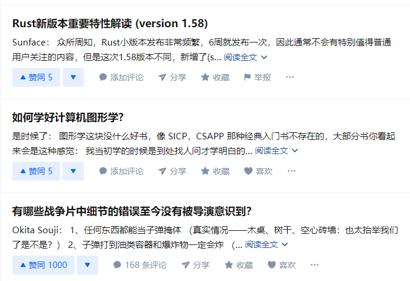

组件介绍
在上一章节中，我们简单的介绍了 元素 的使用以及如何构造一个简单的 UI 页面。
在这一大章中，我们会学习：
- 如何完成一个组件
- 如何对组件进行建模
- 如何 “模块化（声明式）的思考”
什么是组件？§
简单来说，组件就是将一种独特的功能封装为函数，根据不同的输入进行结果 元素 的输出。
（它就像函数一样，根据输入内容，返回不同的输出结果，且它是可以复用的）
从现有内容中寻找灵感§
下图来源于知乎的推荐页面：

知乎的页面本质上就一个列表，每个列表项里展示为你推荐的一个内容，那我们来解析下里面包含的内容：
- 标题
- 作者
- 大致内容
- 赞同数量
- 一堆按钮
我们尝试为它封装一个 结构体(struct) ：
struct PostData {
titile: String,
author: String,
content: String,
like_num: i32,
}
在上方结构体中我们不需要考虑 按钮 ，因为它并不是一个变化的值。
为 Dioxus 建模§
要想将上面的结构体作为 Props 使用，我们只需要为它添加一个 trait ：Props
#[derive(Props, PartialEq)]
struct PostProps {
titile: String,
author: String,
content: String,
like_num: i32,
}
接下来我们编写组件的主体函数：
fn Post(cx: Scope<PostProps>) -> Element {
cx.render(rsx!(
div {
h3 { "{cx.props.title}" }
p { "{cx.props.author}: {cx.props.content}" }
ButtonGroup { like_number: cx.props.like_num }
}
))
}
上面的代码大致能渲染出那种效果（当然这只是模拟，不可能一模一样）
我们需要注意的是这个 ButtonGroup ，它也是一个我们封装的组件，接受一个 like_number 的 Props 参数。
它用来模拟下面的几个按钮，接受 like_num 则是为了打印 点赞数量。
#[derive(Props, PartialEq)]
struct ButtonGroupProps {
like_number: i32
}
fn ButtonGroup(cx: Scope<ButtonGroupProps>) -> Element {
cx.render(rsx!(
div {
class: "button-group",
button {
background_color: "blue",
onclick: |_| { /** 处理点击事件 **/ },
"↑ 赞同 {cx.props.like_number}"
}
button {
onclick: |_| { /** 处理点击事件 **/ },
"↓"
}
button {
onclick: |_| { /** 处理点击事件 **/ },
"添加评论"
}
button {
onclick: |_| { /** 处理点击事件 **/ },
"分享"
}
button {
onclick: |_| { /** 处理点击事件 **/ },
"收藏"
}
button {
onclick: |_| { /** 处理点击事件 **/ },
"喜欢"
}
}
))
}
借用变量§
如果我们使用的是借用变量，如 &str 而非 String，我们只需要为 Props 结构添加生命周期。
#[derive(Props)]
struct TitleCardProps<'a> {
title: &'a str,
}
fn TitleCard<'a>(cx: Scope<'a, TitleCardProps<'a>>) -> Element {
cx.render(rsx!{
h1 { "{cx.props.title}" }
})
}
使用引用可以减少对象被 Clone 的花销。
Scope 对象§
虽然 Dioxus 在很多方面和 React 相似，但是也有一些特性上也有所不同。 比如在组件声明中 React 没有 Scope 这一变量。
在没有 this 指向当前对象时，useState() 似乎无法完成工作。
React 使用全局变量来存储此信息。
全局可变变量必须仔细管理，但在 Rust 程序中通常不鼓励这样做。
所以说 Dioxus 需要 Scope 来维护一些内容和功能：
fn Post(cx: Scope<PostProps>) -> Element {
cx.render(rsx!("hello"))
}